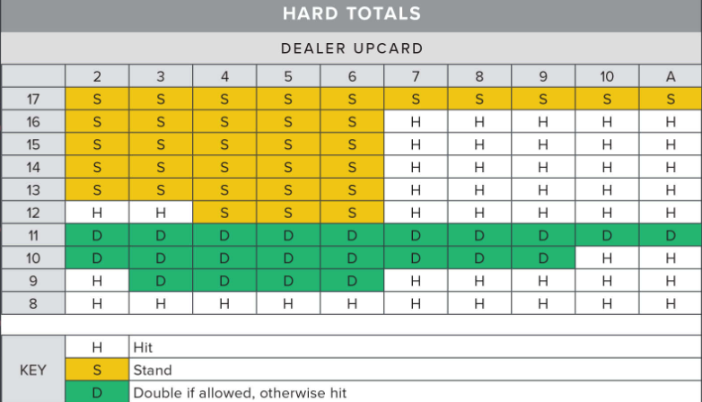
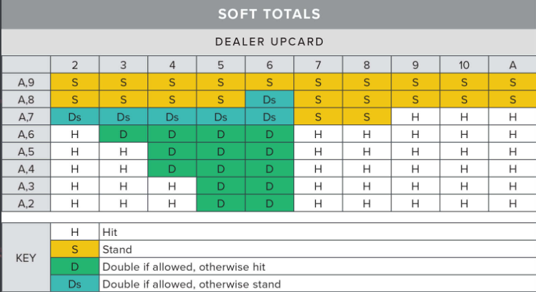
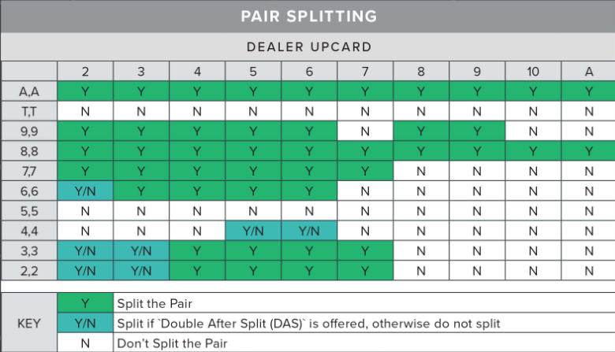
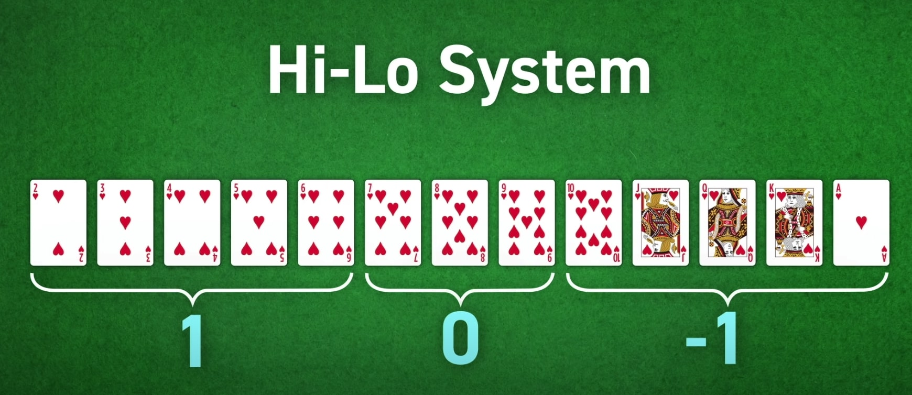
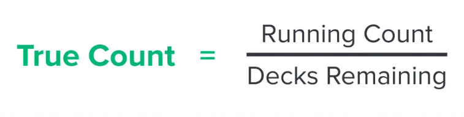

Introduction to Advanced Strategy
Blackjack is a game of chance and probabilities -- there's no strategy that will guarentee you victory, but there are ways to give yourself the best possible chance of winning based on your hand. In order to adopt these strategies, you'll have to memorize and retain as much information as you can while playing as many games of Blackjack as possible. Eventually, it will become almost natural!
Strategy Charts
As said in basic strategy and the rules, there are multiple options for what you can do. Different games will have different rules, but generally you will have the option to either hit, stand, or double down. In some games, you can also surrender. Depending on whether you have a hard or soft hand, you'll take different actions. Below, the strategy charts are basedo on the dealerhitting a soft hand 17.
You can also utilize our built-in solver, which will tell you the best strategy based on whether you have a soft or hard hand.
Hard Hands
This chart should be used when you have a "hard" hand, or when the Ace is worth 1 instead of 11.
Soft Hands
This chart should be used when you have a "soft" hand, or when the Ace can be counted as 11.
Pairs
To put this information to use, the player should adjust their bets according to the true count. Specifically they should raise their bets as the true count rises since this is when the player has the advantage. In turn, they should lower their bets when the true count is negative or neutral and the house has the advantage
Card Counting
Counting cards is a strategy a player can use to determine whether the player or the dealer has an advantage on the next hand. This gives card counters a way to overcome the house edge and win more consistently at Blackjack.
The hi-lo counting system that we'll be discussing was introduced in 1963 by Harvey Dubner, an electrical engineer and mathmatician. By using his strategy in combination with memorization of the basic strategy above, it can greatly increase your change of winning!
However, be careful when you card count. Although it's not illegal, many casinos will immedietly eject you if you're caught card counting, and you won't be able to redeem your chips / money from the cashier.
Step 1:Assign a Value to Each Card
The four steps of counting cards:
- Assign a value of each card
- Keep a “running count” based on the values of the dealt card
- Use this information to calculate the “true count,” or the count per deck
- Adjust bets as the true count rises
The most common card counting system is Hi-Lo, in which the card values are as follows:
- 2 - 6 = +1
- 7 - 9 = 0
- 10 - Ace = -1
Step 2: Keep a “Running Count”
Based on the card dealt, add the assigned value to the current running count of the round. As the running count increases, the advantage shifts to the player. Conversely, as the running count decreases, the advantage shifts to the house.
Step 3: Keep a “True Count”
Keeping a true count, in addition to a running count allows the player to continue beating the house edge even when playing with multiple decks.
True count is important because it keeps track of not only the number of extra high cards, but the concentration of high cards compared to the concentration of low cards. Even with the same running count, this concentration will vary based on how many decks are remaining in the game.
The calculation for true count is the (running count) / (decks remaining).
Example: If the running count is 8, and there are 4 decks remaining, the true count is 2.
Example: if the running count is -5 and there are 2 decks remaining, the true count is -2.
Step 4: Change Your Bets Based on True Count
To put this information to use, the player should adjust their bets according to the true count. Specifically they should raise their bets as the true count rises since this is when the player has the advantage. In turn, they should lower their bets when the true count is negative or neutral and the house has the advantage